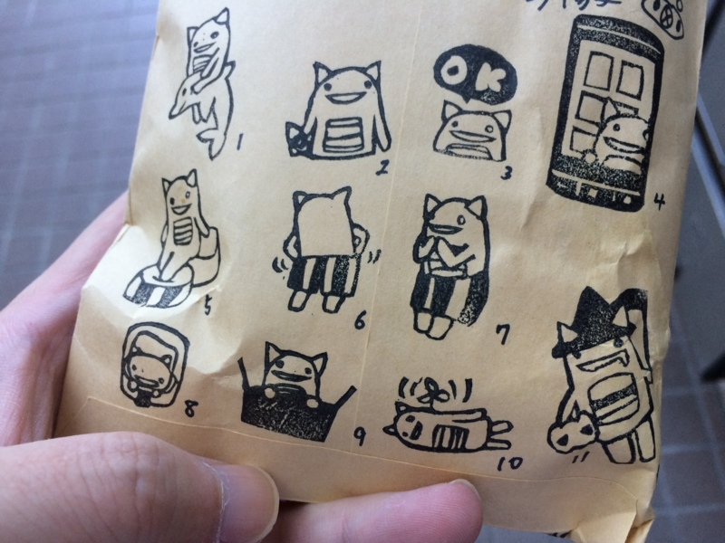

おまえらも、フリーであれ！
公開日：
この記事は だるやなぎ Advent Calendar 2014 - Adventar の25日目の記事です。
某人気プログラミング言語の Advent Calendar ですら途中でコケるなか、まさかこの Advent Calendar が完走するとは思いませんでした。ひとえにごく一部のだるやなぎファンの方々のおかげです。この場を借りてお礼申しあげます。

とくに @kmhiyo さんには素敵な記事を書いていただき、本当にありがたく思います。@kmhiyo さんにはだるやなぎの消しゴムはんこもつくっていただいたのですが、国際だるやなぎのお土産の中では割と人気だったと思います。肝心の自分の分が確保できなくて涙目だったので、またお願いしたいですね。お金があれば、LINE スタンプもお願いしたいのですが、相場を調べると僕のポケットマネーではキツかったです。競艇か totoBIG が当たったらお願いしたいと思います。
また、@you_and_i さんには だるやなぎ のコンテンツ力に疑義を呈する厳しい指摘をいただきました。
ですが、タイトルに書いた通り私は一つ疑問を持っていまして、だるやなぎ様のコンテンツ力(りょく)には疑問を持たざるを得ません。あの国際だるやなぎ会議では定員30名の所、14名しか集まりませんでした。
@you_and_i さんには国際だるやなぎ会議でも尽力いただいたのに、このような結果に終わってしまいましたのはまったく私の不徳の致すところであります。来年はさらなるコンテンツ力の研鑽に励む所存です。
なお、@jz5、@mentaro、@shibayan は、僕の暗殺リストの上位にランクインさせましたので、早晩、ゴルゴがあの世へ送ってくれるはずです。言い訳があれば、呑みながら聞こう。ビールはそっちもちでな！
ライセンスをどうするか
さて、@you_and_i さんにもご指摘いただきましたが、@jz5 氏が主張するように、今度のさらなるコンテンツ力の強化を図るにあたって、ライセンスを明確にすることは重要になるでしょう。そこで、だるやなぎに適用するライセンスの条件をいくつか考えてみました。
共有を阻害しないライセンスであること
世の中には不正利用を恐れるあまり、過度に二次利用を制限しようとするライセンスが少なくありません。しかし、ライセンスの一義的な意味とは本来、不正利用の禁止ではなく、最低限守るべきルールだけを定め、それ以外の用途については自由を保障することで、より広い利用を促進することにあるでしょう。権利の制限は、コンテンツそのものサステナビリティを毀損する場合にのみ、課されるべきです。
だるやなぎは、極力フリーであるべきでしょう。
シンプルなライセンスであること
本人が面倒くさがりということもありますが、複雑なライセンスはなにかと面倒です。
一般的に、厳密にルールを定めれば定めるほど、対処すべき例外は増えます。また、時代の変化に伴いライセンスはメンテナンスが必要になる場合があります。しかし、ルールが複雑であればあるほど、全体の整合性を保ったままの改変は困難になります。
なにより、俺が理解できない。
グローバルに知られたライセンスであること
だるやなぎが世界へ羽ばたくにあたり、ドメスティックなライセンスは避けるべきでしょう。もちろん、独自ライセンスは論外です。だれがだるやなぎごときのために、それ専用のライセンスを読もうなどと思うでしょうか。守られなかったり、理解されなかったり、無視されるライセンスは、そもそもない方がマシなのです。
だるやなぎのライセンスは、すでに世間に広く知られ、多くの人に親しまれているものであるべきでしょう。
CC0 ―― Creative Commons Zero

というわけで、それらの条件を満たすライセンスを探してみた結果、悔しいですが CC0 しかないようです。NYSL：煮るなり焼くなり好きにしろライセンス | オープンソース・ライセンスの談話室 も魅力的なのですが、やはり世界的に知られていないということで、CC0 には一歩及ばないかなと思いました。あと、CC0 はなんかガンダムのタイトルみたいでカッコいいのも魅力でした。
To the extent possible under law,
だるやなぎ
has waived all copyright and related or neighboring rights to
だるやなぎ.
This work is published from:
日本.

ほんとはもっと「だるやなぎの結婚チャンスをつぶすような行為は慎む」とか「だるやなぎの尊厳を尊重する」だとかいう条項も入れたかったのですが、ごく少数の「ライセンスがなくても躊躇せずに利用する人たち」の脳みそにはきっと届かないだろうと思い、断念しました。
ただし、日本の著作権法上、著作者人格権だけは放棄できない（らしい）ので、これだけは保持するものとします。
そもそも著作物とは、それを創作した人の全人格を表したものとも言うことができ、著作物がどのように利用されるかは、単に、経済上の問題にとどまらず、著作者の人格的な問題にもかかわってきますので、著作権法では「著作者人格権」として次の3つの権利を定めています。
公表権
著作物を公表するかしないか、公表するとすればどのように公表するかを決めることができる権利。
氏名表示権
著作物に氏名を表示するかしないか、表示する場合に本名を表示するかペンネームを表示するかを決めることができる権利。
同一性保持権
著作物の改変、変更、切除などを認めない権利。
とはいえ、行使する気はあまりないので、自由にしていただいて結構です。この辺りは厳密には CC0 ではないのかもしれませんが（よく知らん）、一個人ではどうにもならないことでもあるので、今後に期待したいですね。
あと、だるやなぎを積極的に活用していただいている方々――とくに @jz5、@mentaro、@shibayan の三氏に関しましては、積極的にだるやなぎのようなフリーライセンスを採用することを希求いたします。これは、各氏とだるやなぎをコラボレーションさせることにより、コンテンツ力の大幅な向上が期待できるからです。
たとえば、このような活用が考えられるでしょう。

だるやなぎがキャズムを突破するには、お三方のご協力が欠かせません。さぁ、ともにウェブコンテンツの新時代を開拓しようじゃありませんか！（翻訳：死なばもろともじゃ
P.S.
@tworks さんもいろいろ万死に値すると思ったので、そのうち素材を収集しにまいります。よろしくお願いします。